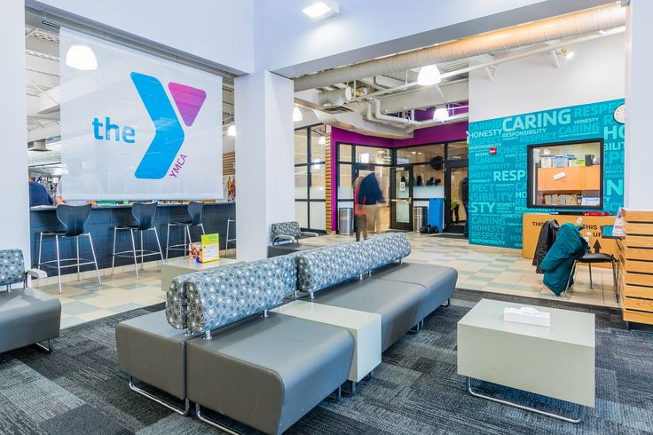
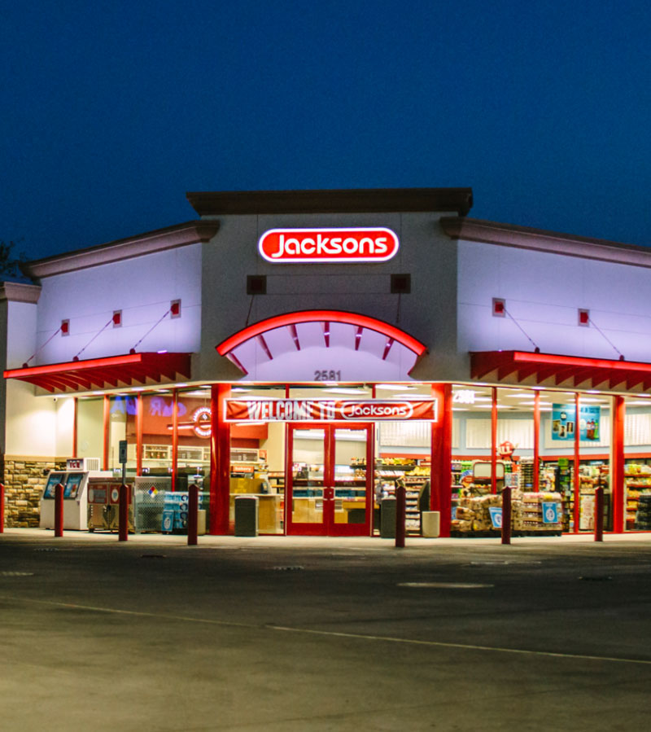

Using RStudio, I performed web scraping on Glassdoor job postings to collect employment data for analysis.
The project involved extracting relevant listing information, cleaning the data,
and compiling the results into a structured CSV dataset for further analysis and visualization.
Business Intelligence & Predictive Modeling | R Programming

Analyzed YMCA member survey data using R to identify key drivers of satisfaction
and member recommendations. Built and compared predictive models including logistic
regression, decision trees, and random forests after cleaning and transforming survey variables.
Insights were presented through simplified visualizations and actionable recommendations to support
stakeholder decision-making and improve member engagement.
Data Mining & Machine Learning | CRISP-DM Framework
Developed perdictive models to analyze student enrollment outcomes using CRISP-DM framework in R.
Built and evaluated logistic regression, decision tree, random forest, and neural netwwork models
to identify factors influencing student retention and enrollment decisions. Results were used to interpret
variable importance and recommend data-driven recruitment and retention strategies.
Business Intelligence Dashboard | Power BI

Created an interactive Power BI dashboard analyzing annual candy sales across multiple
regions for Jacksons Food Stores. Consolidated and transformed multi-state sales data
to identify key performance indicators and visualize trends in revenue and product
performance. The dashboard provided executives with clear insights to support strategic
business decisions.
SQL Database Design & Data Normalization
Designed and implemented a relational database schema to store and manage software commit data.
The project involved normalizing data structures, defining relationships between entities,
and writing advanced SQL queries to efficiently retrieve and analyze commit activity.
This work demonstrates strong understanding of database design principles, data integrity,
and structured query language for data management and analysis.